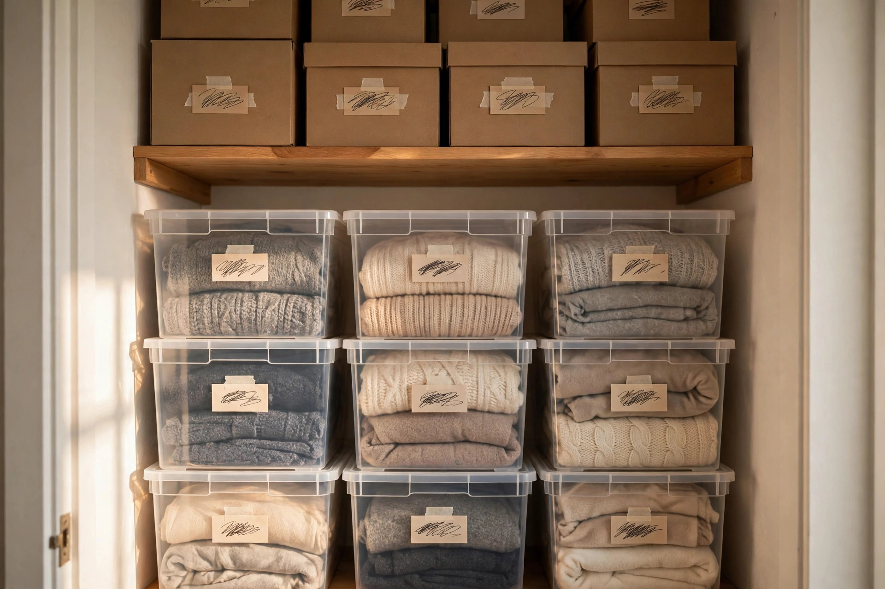

Small Space Storage & Organisation
Small Apartment Seasonal Storage Swap: A Simple System
Intro
Every small apartment has two wardrobes' worth of stuff and one wardrobe's worth of space — because summer and winter clothes, bedding and shoes are all trying to live in the same place at once. The answer is not more storage. It is a swap: only the current season lives in the easy-to-reach places, and the other season waits in boxes.
This guide is a simple seasonal storage swap system — one box in, one box out, labelled by season — that takes about an hour twice a year. Each step lists what it costs, and most cost nothing. Do it in March and September, and the wardrobe will never be crowded again.

1. Pick two swap days a year — $0
Choose two fixed days: one in spring, one in autumn. Put them in your calendar now — for example, the first Saturday in March and the first Saturday in September. A fixed date means the swap actually happens instead of being put off until the wardrobe bursts. One hour, twice a year, is all the system needs.
2. Four labelled boxes per season — $15–$20
You need four boxes: winter clothes, winter bedding, summer clothes, summer bedding. Four clear boxes with lids cost about $18. Label each box on the side that faces out, with the season and the contents — "winter jumpers", "summer bedding". Clear boxes mean you can check the contents without opening them.
3. One box in, one box out — $0
The core rule: when the summer box comes out of storage, the winter box goes in. One box in, one box out, every time. Nothing extra accumulates, because the swap is always a straight exchange. If a box will not fit back on the shelf, something in it has to go — that is the system working.
4. Sort while you swap — $0
The swap is also the sort. As you move clothes from the wardrobe to the box, ask three questions: does it fit, is it worn out, did I wear it this season? Anything that fails goes in a charity bag, not in the box. Most swaps remove three to five items, which is how the wardrobe slowly gets lighter instead of heavier.
5. Wash before you store — $0
Wash or air everything before it goes into a box for six months. Stains set, smells grow, and moths love dirty wool. A quick wash costs nothing extra — it is laundry you would do anyway. Add a lavender sachet or a cedar block to each box, about $5 for a pack, to keep moths away and the clothes fresh.
6. Store boxes in the same place every time — $0
Pick one storage spot for the out-of-season boxes and always use it: on top of the wardrobe, under the bed, or on the highest shelf. When the boxes always live in the same place, the swap takes minutes instead of a search. If the spot is full, the system is telling you that you own too much for the flat.
7. Swap the bedding with the clothes — $0
Do the bedding at the same time as the clothes: heavy duvet and flannel sheets out in spring, light duvet and cotton sheets out in autumn. One job, one hour, twice a year. Store the out-of-season bedding in its own box, folded as a set — duvet cover, sheet and pillowcases together — so changing the bed is one grab.
8. Swap the shoes too — $0
Shoes follow the same rule: boots and heavy shoes go away in spring, sandals and light trainers go away in autumn. Two shoe boxes, one per season, keep the entrance clear — only the current season's shoes are by the door. A shoe swap takes five minutes and frees a whole shelf by the entrance.
9. A checklist on the box lid — $0–$5
Tape a short checklist to the inside of each box lid: what is in the box, and what needs replacing before next season — "one jumper has a hole", "buy new sandals in spring". A list on the lid means you do not open the box mid-season to check, and you know exactly what to buy when the season changes. A marker and tape cost almost nothing.
10. Children's clothes swap in the same hour — $0
Children outgrow clothes every season, so their swap includes a size check: anything too small goes straight in the charity bag. Do the children's swap in the same hour as yours, while the boxes are already out. Outgrown clothes that go back in a box are clothes you will store for six months and then give away anyway.
11. Holiday decorations swap with the seasons — $0
Christmas decorations, summer picnic things and beach gear follow the same system: one box per occasion, stored in the same spot as the seasonal boxes. When the season changes, the decoration box swaps too. One box per occasion stops decorations from spreading across every cupboard in the flat.
12. Review the system every year — $0
Once a year, ask whether the system still fits: are the boxes the right size, is the storage spot still working, did anything sit untouched for two seasons? Anything untouched for two seasons can go. A system that is reviewed stays simple; a system that is never reviewed slowly becomes another pile of boxes.
Conclusion
A seasonal swap is not a big organisation project — it is one hour, twice a year, with four labelled boxes and one rule: one box in, one box out. The wardrobe holds only this season, the entrance holds only this season's shoes, and nothing is stored twice. Put the two dates in your calendar today, and the next swap will take care of itself.
Budget recap
- Four clear boxes with lids: ~$18 - Lavender sachets / cedar blocks: ~$5 - Labels and tape: ~$3
Total for a seasonal swap system: ~$25 — or $0 with boxes you already have.
Pinterest pin titles
- Small Apartment Seasonal Storage Swap — A Simple System
- One Box In, One Box Out: The Seasonal Swap for Tiny Flats
- 12 Steps to a Seasonal Storage Swap (1 Hour, Twice a Year)